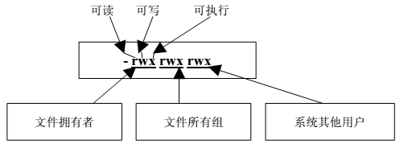
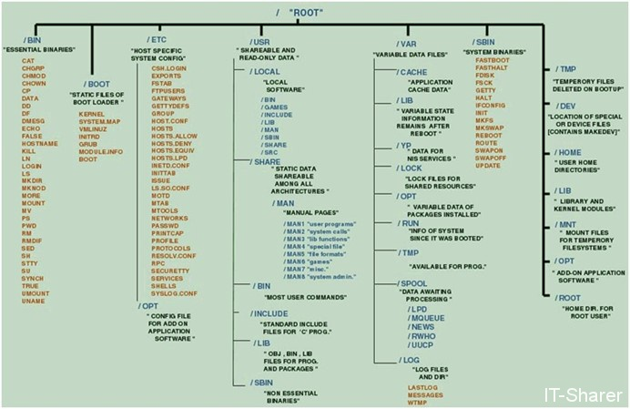

1.文件说明
在Linux系统中，一切皆以文件的形式显示在文件系统中。
文件类型主要有：普通文件、目录文件、链接文件和设备文件。
Linux文件属性表示方法如下图：

第一个字符的类型：
-：普通文件；
d：目录文件；
l:链接文件；
c:字符设备；
b:块设备；
p:先进先出的FIFO文件
f:后进先出的LIFO文件
后面三组字符分别是文件拥有者、文件所有组、系统其它用户的权限。
2.系统目录结构

/ ：根目录一般不含任何文件，除了可能的标准的系统引导映象，通常叫/vmlinuz 。所有其他文件在根文件系统的子目录中。
/bin ：引导启动所需的命令或普通用户可能用的命令(可能在引导启动后)。
/sbin： 类似/bin ，但不给普通用户使用，虽然如果必要且允许时可以使用。
/etc ：特定机器的配置文件。
/root :root用户的家目录。
/lib: 根文件系统上的程序所需的共享库。
/lib/modules: 核心可加载模块，特别是那些恢复损坏系统时引导所需的(例如网络和文件系统驱动)。
/dev:设备文件。
/tmp: 临时文件。引导启动后运行的程序应该使用/var/tmp ，而不是/tmp ，因为前者可能在一个拥有更多空间的磁盘上。
/boot :引导加载器(bootstrap loader)使用的文件，如LILO。核心映象也经常在这里，而不是在根目录。如果有许多核心映象，这个目录可能变得很大，这时可能使用单独的文件系统更好。
/mnt:系统管理员临时mount的安装点。程序并不自动支持安装到/mnt 。 /mnt 可以分为子目录(例如/mnt/dosa 可能是使用MSDOS文件系统的软驱，而/mnt/exta 可能是使用ext2文件系统的软驱)。
/proc , /usr , /var , /home :其他文件系统的安装点。
/etc:目录包含很多文件。下面说明其中的一些。其他的你应该知道它们属于哪个程序，并阅读该程序的man页。许多网络配置文件也在/etc 中，它们在《网络管理指南》中说明。
/etc/rc or /etc/rc.d or /etc/rc.d : 启动、或改变运行级时运行的scripts或scripts的目录，更详细的信息见关于init 的章。 /etc/passwd :用户数据库，其中的域给出了用户名、真实姓名、家目录、加密的口令和用户的其他信息。格式见passwd 的man页。
/etc/fdprm :软盘参数表。说明不同的软盘格式。用setfdprm 设置。更多的信息见setfdprm 的
man页。
/etc/fstab: 启动时mount -a命令(在/etc/rc 或等效的启动文件中)自动mount的文件系统列表。 Linux下，也包括用swapon -a启用的swap区的信息。见4.8.5节和mount 的man页。
/etc/group: 类似/etc/passwd ，但说明的不是用户而是组。见group 的man页。 /etc/inittab :init 的配置文件。
/etc/issue :getty 在登录提示符前的输出信息。通常包括系统的一段短说明或欢迎信息。内容由系统管理员确定。
/etc/magic : file 的配置文件。包含不同文件格式的说明，file 基于它猜测文件类型。见magic 和
file 的man页。
/etc/motd :Message Of The Day，成功登录后自动输出。内容由系统管理员确定。经常用于通告信息，如计划关机时间的警告。
/etc/mtab:当前安装的文件系统列表。由scripts初始化，并由mount 命令自动更新。需要一个当前安装的文件系统的列表时使用，例如df 命令。
/etc/shadow :在安装了影子口令软件的系统上的影子口令文件。影子口令文件将/etc/passwd 文件中的加密口令移动到/etc/shadow 中，而后者只对root可读。这使破译口令更困难。
/etc/login.defs : login 命令的配置文件。
/etc/printcap: 类似/etc/termcap ，但针对打印机。语法不同。
/etc/profile , /etc/csh.login , /etc/csh.cshrc:登录或启动时Bourne或C shells执行的文件。这
允许系统管理员为所有用户建立全局缺省环境。各shell见man页。
/etc/securetty:确认安全终端，即哪个终端允许root登录。一般只列出虚拟控制台，这样就不可能(至少很困难)通过modem或网络闯入系统并得到超级用户特权。
/etc/shells:列出可信任的shell。chsh 命令允许用户在本文件指定范围内改变登录shell。提供一台机器FTP服务的服务进程ftpd 检查用户shell是否列在 /etc/shells 文件中，如果不是将不允许该用户登录。
/etc/termcap:终端性能数据库。说明不同的终端用什么”转义序列”控制。写程序时不直接输出转义序列(这样只能工作于特定品牌的终端)，而是从/etc/termcap 中查找要做的工作的正确序列。这样，多数的程序可以在多数终端上运行。见termcap 、 curs_termcap 和terminfo 的man页。
/dev目录: /dev 目录包括所有设备的设备文件。设备文件用特定的约定命名，这在设备列表中说明 (见[Anv])。设备文件在安装是产生，以后可以用/dev/MAKEDEV 描述。 /dev/MAKEDEV.local 是系统管理员为本地设备文件(或连接)写的描述文稿 (即如一些非标准设备驱动不是标准MAKEDEV 的一部分)。
/usr: 文件系统经常很大，因为所有程序安装在这里。 /usr 里的所有文件一般来自Linux distribution；本地安装的程序和其他东西在/usr/local下。这样可能在升级新版系统或新distribution时无须重新安装全部程序。 /usr的有些子目录在下面列出(一些不太重要的目录省略了，更多信息见FSSTND)。
usr/X11R6: X Window系统的所有文件。为简化X的开发和安装，X的文件没有集成到系统中。 X自己在/usr/X11R6 下类似/usr 。
/usr/X386 类似/usr/X11R6 ，但是给X11 Release 5的。
/usr/bin:几乎所有用户命令。有些命令在/bin 或/usr/local/bin 中。 /usr/sbin :根文件系统不必要的系统管理命令，例如多数服务程序。
/usr/man , /usr/info , /usr/doc :手册页、GNU信息文档和各种其他文档文件。
/usr/include :C编程语言的头文件。为了一致性这实际上应该在/usr/lib 下，但传统上支持这个名字。
/usr/lib :程序或子系统的不变的数据文件，包括一些site-wide配置文件。名字lib来源于库(library); 编程的原始库存在/usr/lib 里。
/usr/local:本地安装的软件和其他文件放在这里。
/var/catman:当要求格式化时的man页的cache。man页的源文件一般存在/usr/man/man*
中；有些man页可能有预格式化的版本，存在/usr/man/cat*中。而其他的man页在第一次看时需要格式化，格式化完的版本存在/var/man 中，这样其他人再看相同的页时就无须等待格式化了。 (/var/catman 经常被清除，就象清除临时目录一样。) /var/lib:系统正常运行时要改变的文件。
/var/local :/usr/local 中安装的程序的可变数据(即系统管理员安装的程序)。注意，如果必要，即使本地安装的程序也会使用其他/var 目录，例如/var/lock 。
/var/lock:锁定文件。许多程序遵循在/var/lock 中产生一个锁定文件的约定，以支持他们正在使用某个特定的设备或文件。其他程序注意到这个锁定文件，将不试图使用这个设备或文件。
/var/log :各种程序的Log文件，特别是login (/var/log/wtmp log所有到系统的登录和注销) 和
syslog (/var/log/messages 里存储所有核心和系统程序信息。 /var/log 里的文件经常不确定地增长，应该定期清除。
/var/run:保存到下次引导前有效的关于系统的信息文件。例如， /var/run/utmp 包含当前登录的用户的信息。
/var/spool : mail, news, 打印队列和其他队列工作的目录。每个不同的spool在/var/spool 下有
自己的子目录，例如，用户的邮箱在/var/spool/mail 中。
/var/tmp :比/tmp 允许的大或需要存在较长时间的临时文件。 (虽然系统管理员可能不允许
/var/tmp 有很旧的文件。)
/proc: 文件系统是一个假的文件系统。它不存在在磁盘某个磁盘上。而是由核心在内存中产生。用于提供关于系统的信息(originally about processes, hence the name)。下面说明一些最重要的文件和目录。 /proc 文件系统在proc man页中有更详细的说明。
/proc/1:关于进程1的信息目录。每个进程在/proc 下有一个名为其进程号的目录。 /proc/cpuinfo:处理器信息，如类型、制造商、型号和性能。 /proc/devices :当前运行的核心配置的设备驱动的列表。 /proc/dma :显示当前使用的DMA通道。 /proc/filesystems:核心配置的文件系统。
/proc/interrupts:显示使用的中断，and how many of each there have been. /proc/ioports :当前使用的I/O端口。
/proc/kcore :系统物理内存映象。与物理内存大小完全一样，但不实际占用这么多内存；it is
generated on the fly as programs access it. (记住：除非你把它拷贝到什么地方，/proc 下没有任何东西占用任何磁盘空间。)
/proc/kmsg :核心输出的消息。也被送到syslog 。
/proc/ksyms:核心符号表。
/proc/loadavg:系统”平均负载”；3个没有意义的指示器指出系统当前的工作量。
/proc/meminfo :存储器使用信息，包括物理内存和swap。
/proc/modules:当前加载了哪些核心模块。
/proc/net :网络协议状态信息。
/proc/self :到查看/proc 的程序的进程目录的符号连接。当2个进程查看/proc 时，是不同的连接。这主要便于程序得到它自己的进程目录。
/proc/stat :系统的不同状态，such as the number of page faults since the system was
booted.
/proc/uptime :系统启动的时间长度。 /proc/version :核心版本。